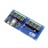

Things used in this project
Hardware components |
|

|
Seeed Studio XIAO ESP32S3 Sense |
| Seeed Studio XIAO Expansion Board | |
| Seeed Studio Grove - Temperature, Humidity, Pressure and Gas Sensor (BME680) | |
| M5Stack AirQ | |
| M5Stack CoreMP135 w/ STM32MP135D | |
| Adafruit-STM32F411 "Blackpill" Development Board 4877 | |
|  | ControlEverything.com Relay Shield for Particle Photon I²C 8-Channel SPDT 10-Amp |
Software apps and online services |
|
| Home Assistant | |
| Matter OS | |
Hand tools and fabrication machines |
|

|
Soldering iron (generic) |
| Solder Flux, Soldering | |
Story
Backstory
Imagine a world where every home, regardless of its occupant's abilities, is a place of comfort and independence. Yet, for many, the simple act of turning on a light or adjusting the thermostat can be a daily struggle. The high-mounted switches, thermostats, and controls that we take for granted can be insurmountable obstacles for those with limited mobility or reach.
Inspired by a desire to create a more inclusive and accessible living environment, I embarked on a journey to develop a home automation system that would break down these barriers. My goal was to create a solution that was not only affordable and easy to install but also designed to empower everyone, regardless of their physical limitations.
Brief overview
- The Brain: The M5Stack CoreMP135 is the central hub. It's like the brain of the operation, collecting information from all the other devices and making decisions.
- The Eyes and Ears: The XIAO ESP32S3 Sense is equipped with a camera and Bluetooth connectivity. Think of it as the eyes and ears of the system. It can see what's happening and communicate with other devices.
- The Helpers: The Seeeduino XIAO Expansion Board and Adafruit Blackpill Development Board assist the main hub with specific tasks, like displaying information or handling complex calculations.
- The Sensors: The BME680 and M5Stack AirQ sensors monitor environmental conditions like temperature, humidity, air quality, and more. They're like the system's senses, providing real-time data.
- The Actions: The Relay Shield allows us to control devices like lights, motors, and blinds. It's the system's hands, carrying out the actions based on the information gathered.
Together, these devices create a network that can:
- Automate tasks: Turn lights on and off, adjust the thermostat, and more based on your preferences or environmental conditions.
- Monitor your home: Keep an eye on your property with the camera, detect air quality issues, and receive alerts for any problems.
- Create a comfortable environment: Adjust temperature, humidity, and lighting to suit your needs.
- Connect to other devices: Control your home automation system from your smartphone or tablet.
Hardware Usage
Seeed Studio XIAO ESP32S3 Sense: The Eyes and Ears of the System
The XIAO ESP32S3 Sense acts as the foundation for the wireless sensor network. Packing a camera and Bluetooth connectivity, it goes beyond simple sensing. The camera can be used for security monitoring, capturing images for facial recognition systems, or detecting presence in specific areas. Bluetooth allows communication with other smart devices in the home, like door locks or proximity-based controls, creating a truly connected environment. Ideally, place the XIAO ESP32S3 Sense near entry points or areas needing surveillance or motion detection.
Seeed Studio Seeeduino XIAO Expansion Board: Expanding Functionality
The Seeeduino XIAO Expansion Board acts as a helpful companion to the XIAO ESP32S3 Sense. It expands the capabilities of the base unit by integrating an OLED display and an RTC (Real-Time Clock). The OLED display can be used to show live data feeds, such as temperature, humidity, or current air quality metrics, providing valuable real-time feedback. The RTC allows for scheduling automated tasks within the home automation system, like turning lights on/off at specific times or adjusting the thermostat based on pre-defined schedules. For optimal usability, we can either mount the Seeeduino XIAO Expansion board near the XIAO ESP32S3 Sense itself or place it in a central location for easy access to the displayed data.
Seeed Studio Grove - BME680 Sensor: Environmental Guardian
The Seeed Studio Grove - BME680 Sensor acts as the home's environmental guardian. This versatile sensor monitors key environmental factors like temperature, humidity, pressure, and even gas levels. By strategically placing these sensors in different rooms throughout the home, we can collect comprehensive environmental data. This data is then fed to the central Home Assistant server for analysis and automation. For example, if the BME680 detects poor air quality, it can trigger ventilation systems or air purifiers to maintain a comfortable and healthy environment.
After flashing the code and following the schematic the device should be ready like this:
M5Stack AirQ Sensor: Targeted Air Quality Monitoring
While the BME680 sensors provide a general overview of air quality, the M5Stack AirQ Sensor allows for more targeted monitoring in specific areas. This sensor is ideal for kitchens or rooms with fireplaces, where air quality may vary significantly. The M5Stack AirQ monitors air quality parameters like CO2 levels and particulate matter. By strategically placing this sensor in areas prone to smoke or gas accumulation, we can trigger alarms or ventilation systems when air quality drops below desired levels, ensuring a healthy environment throughout the home.
M5Stack CoreMP135 with STM32MP135D: The Brains of the Operation
The M5Stack CoreMP135 with STM32MP135D serves as the central hub of the home automation system. Imagine it as the brain, collecting data from all the sensors and devices. Here, the data is processed and analyzed, allowing the system to make decisions and implement automation rules based on the received information. The M5Stack CoreMP135 also manages scheduled tasks and interacts with the user devices (smartphones, tablets) for remote control and monitoring. This hub should be placed in a central location with good WiFi connectivity for optimal performance.
Adafruit STM32F411 "Blackpill" Development Board (Optional): A Helping Hand
The Adafruit STM32F411 "Blackpill" Development Board is an optional component that can act as a co-processor to offload specific tasks from the main server (M5Stack CoreMP135). This can be particularly useful for functions requiring high-speed processing or low latency, such as real-time data handling from sensors. Additionally, the Blackpill could be used for handling secure communication between devices or encryption/decryption tasks. The placement of the Blackpill depends on its chosen functionality. It can be integrated directly with the M5Stack CoreMP135 server or operate as a standalone module depending on the needs.
Relay Shield : Taking Control
The final piece of the puzzle is the Relay Shield. This shield provides relay control for various devices throughout the home, allowing we to manage electrical appliances like lights, motors, motorized blinds, or windows. The shield interfaces with Home Assistant, enabling automated or manual control based on sensor data. This control panel should be placed near the circuit panel or within a central control box, allowing wired connections to different circuits and providing easy access for manual control if needed.
Features in the current system
Retrofitting: Seamlessly integrate with existing homes, minimizing disruption and costs.
Affordability: Make accessible home automation a reality for everyone with competitive pricing.
Compatibility: Easily connect to popular home automation systems and controls for a unified experience.
Real-time Monitoring: Stay informed with instant feedback from multiple sensors, ensuring safety and comfort.
Enhanced Security: Protect your privacy and data with a local server, eliminating cloud-based vulnerabilities.
System Design
This system also follows a similar design.
Monitoring Outputs
Control System Test Demo
Short Explanation video for the whole System
Future Improvements
Enhanced Accessibility:
Voice Control: Implement more robust voice recognition for hands-free control of your home automation system, especially for individuals with limited mobility.
Gesture Control: Explore the integration of gesture-based control, allowing users to interact with devices through hand movements for a more intuitive experience.
Intelligent Automation:
Machine Learning: Utilize machine learning algorithms to enable your system to learn and adapt to your preferences and habits, providing personalized recommendations and automating tasks more effectively.
Energy Efficiency:
Optimization Algorithms: Develop algorithms that optimize energy consumption by analyzing usage patterns and adjusting settings accordingly, such as scheduling appliances to run during off-peak hours.
Enhanced Security:
Advanced Security Features: Incorporate features like intrusion detection, video surveillance, and smart locks to enhance your home's security.
Integration with Other Devices:
IoT Ecosystem: Expand the integration of your home automation system with other IoT devices, such as smart appliances, wearables, and virtual assistants, for a more cohesive and connected living experience.
User Experience Improvement
Simplified User Interface: Continuously refine the user interface for easier navigation and access to key features.